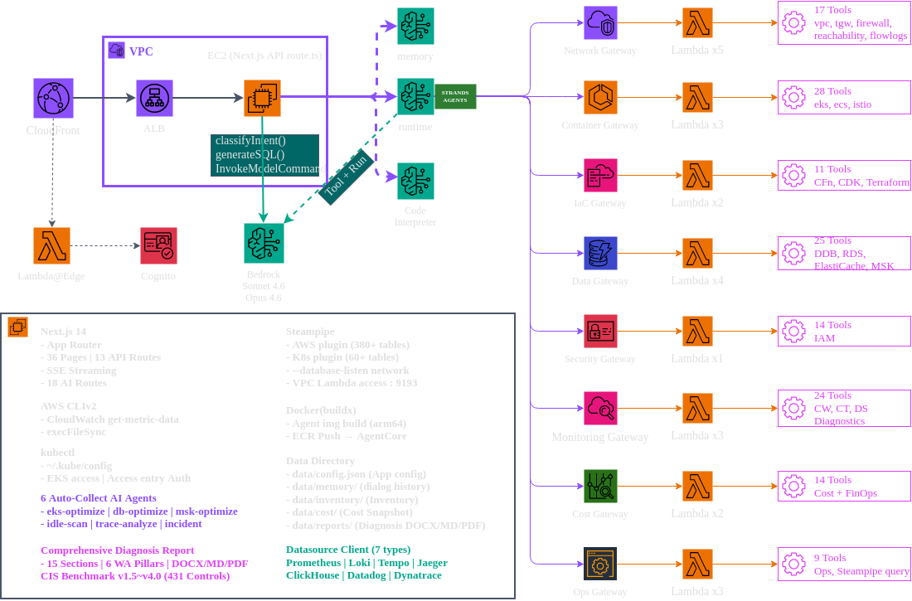

AI-Powered AWS Operations Dashboard
Junseok Oh | Solutions Architect | AWS
| 레이어 | AWS 서비스 |
|---|---|
| 엣지·인증 | CloudFront + Lambda@Edge + Cognito |
| 컴퓨트 | EC2 t4g.2xlarge (ARM64 Graviton) + ALB |
| AI | Bedrock AgentCore + Bedrock 모델 |
| IaC | AWS CDK |
aws = 전 계정 통합, aws_ = 개별data/config.json의 accounts[]만 수정 — 코드 변경 불필요(ADR-008)/datasources/explore에서 자연어 → PromQL/LogQL/TraceQL/SQL 자동 생성 (SSRF allowlist, ADR-011)| 강점 | 내용 |
|---|---|
| AI 도구 아키텍처 | 8 역할 기반 AgentCore Gateway · 125 MCP 도구 · 19 Lambda |
| 멀티 라우트 합성 | 질문을 11개 라우트 중 1~3개로 분류해 병렬 호출 후 종합(ADR-002/025) |
| 알림 파이프라인 | 웹훅(CloudWatch SNS/Alertmanager/Grafana) → 상관 분석 → AI 자동 진단 → Slack(ADR-009) |
| 이벤트 사전 스케일링 | 과거 메트릭 분석 → Bedrock 다단계 워밍업 플랜·스크립트(ADR-010, 검토-후-실행) |
| CIS 컴플라이언스 | Powerpipe로 CIS v1.5~v4.0, 431개 컨트롤 벤치마크 |
| 설계 투명성 | 32개 ADR — 모든 주요 결정이 한국어/영어로 문서화 |
AWSops 기술 아키텍처

infra-cdk/ 구조cdk deploy 한 번에 전체 인프라 생성aws — 모든 계정 통합 조회aws_123456789012 — 개별 계정public, aws_{{id}}, kubernetes, trivy게이트웨이를 클릭하여 사용 가능한 도구를 확인하세요.
| Agent | Target |
|---|---|
| eks-optimize | EKS rightsizing |
| db-optimize | RDS/ElastiCache/OpenSearch |
| msk-optimize | MSK Kafka brokers |
| idle-scan | Unused resources |
| trace-analyze | Distributed traces |
| incident | Multi-source incidents |
formatContext() 메서드analysisPrompt 시스템 프롬프트queryDatasource(type, query, range)| Layer | Technology | Details |
|---|---|---|
| Frontend | Next.js 14 | App Router, Tailwind, Recharts, React Flow |
| Data | Steampipe | 380+ AWS, 60+ K8s tables, pg Pool |
| AI Model | Bedrock Claude | Sonnet 4.6 (classify), Opus 4.8 (analyze) |
| AI Runtime | AgentCore | Strands Agent, 8 Gateways, 125 Tools |
| Functions | Lambda | 19 functions (MCP tool implementations) |
| Auth | Cognito | User Pool + Lambda@Edge + CloudFront |
| Infra | CDK | VPC, EC2, ALB, CloudFront as Code |
| Observability | Multi-Source | Prometheus, Loki, Tempo, Jaeger, Datadog, Dynatrace, ClickHouse |
실전 시나리오와 종합진단
🔍 질문 분석 중...
Route: eks-optimize
📊 데이터 수집 중...
Prometheus ✅ Steampipe ✅ Cost API ✅
🤖 Opus 4.8 분석 중...
"EKS 비용 개선점 찾아줘"
Prometheus (PromQL)
Steampipe SQL
"미사용 리소스 찾아줘"
| Category | SQL Query |
|---|---|
| Unattached EBS | status = 'available' |
| gp2 Volumes | volume_type = 'gp2' |
| Unassociated EIPs | association_id IS NULL |
| Stopped EC2 | instance_state = 'stopped' |
| Old Snapshots | start_time < NOW() - 90 days |
| Unused SGs | ENI 참조 없음 |
"6개 미연결 EBS (총 500GB) → $50/월" "3개 미연결 EIP → $10.8/월" "12개 gp2 볼륨 → gp3 전환 시 $30/월 절감" "총 예상 월 낭비: $240"
install-all.sh 실행AWSops — AI-Powered AWS Operations Dashboard
Junseok Oh | Solutions Architect | AWS